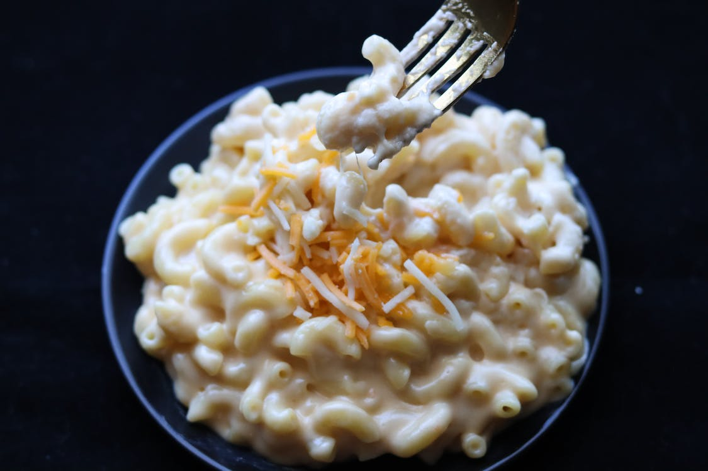

Mac n' Cheese

Description
Classic baked mac and cheese recipe. Just like your mom used to make!
Ingredients
- Macaroni
- Butter and flour
- Milk
- Cheese
- Seasoning: salt and pepper, paprika
Steps
- Boil the macaroni: The simplest, but first step. Boil your macaroni
according to the instructions provided by the container
- Make the cheese sauce: Melt butter, then whisk in the flour.
Whisk in the milk, bring to a simmer, and stir in the cheeses. Season with salt and pepper
and continue simmering until the sauce is thick. Pour the sauce over the noodles and stir
- Bake the mac and cheese: Bake in the oven until top is golden brown